1. Intro chapter
Trascrizione verbatim dalla guida di Rondino.
1. Intro chapter
Hello and welcome to my new guide on Mihawk OP17.
I'm Roberto Rondino. For those of you who don't know me, I've been playing One Piece Card Game since the very beginning, all the way back to the Super Pre-Release.
I got my very first Serial Luffy at my first-ever major event in Karlsruhe four years ago, and since then I've consistently topped the majority of the events I've attended.
Over the last year and a half, I took a bit of a break from the competitive side of the game to focus more on the vendor side of the card world. If I want to make this card thing my life, I need to be efficient with my time and focus on where the biggest opportunities are.
But over the last few months, I've gotten back into competitive play, especially now that tournament prizes have become absolutely insane.
This guide is going to be one of the most complete pieces of work I've ever put together. I've invested a huge amount of time and focused effort into Mihawk, and at this point I'm confident that the conclusions I've reached represent some of the strongest ideas currently available for the deck.
We'll start with deck analysis and deckbuilding ideas, then move into detailed matchup explanations.
I'll go particularly deep on mulligans, turn-by-turn sequencing, and the decisions that actually determine whether you win or lose a game.
The goal isn't just to tell you what cards to play. I want to explain why certain lines are correct, when they change, and how you should think about each matchup.
I'll also continuously update the guide with videos of me playing and coaching through every relevant matchup, so you'll be able to see the concepts applied in real games.
There will also be a condensed mini-guide designed to be quickly reviewed before a tournament, covering the most important information you need to remember.
I hope you enjoy the guide, and I sincerely hope it helps you win a serial with Mihawk.
Good luck, and have fun reading.
Continue to next page →
🗂 Carte citate nel capitolo indice del trascrittore
| ID | Nome | Note |
|---|---|---|
| — | Mihawk (OP17) | Leader del deck oggetto della guida; nessun ID carta mostrato nel capitolo |
| — | Serial Luffy | Riferimento al premio serializzato vinto a Karlsruhe, non a una carta giocata |
2. Meta analysis
Trascrizione verbatim dalla guida di Rondino.
2. Meta analysis
Meta Analysis & Why You Should Play Mihawk
2.1 After Utrecht EU Finals
If I had written this section before Utrecht Finals, the meta analysis would have been pretty superficial. The general consensus was basically that Mihawk was absolutely broken, and I genuinely expected both Utrecht Finals and Mera Mera to have an absurd Mihawk presence, potentially reaching 80%+ of the field at some stages of the events.
Then Utrecht happened. Mihawk didn't win anything major there and, outside of potentially some Regionals and Treasure Cups, the deck hasn't produced the overwhelming results people were expecting. As a consequence, quite a few players have already started getting off the Mihawk train.
I think that's a mistake.
Utrecht's Results Were Predictable
What happened at Utrecht should have been absolutely expected and, in my opinion, says very little about how strong Mihawk actually is. Mihawk was still the most represented deck in Top Cut, but more importantly, it entered Utrecht with a gigantic target on its back.
The deck was considered such an obvious best pick for the tournament that a significant portion of the field went into full counterpick mode. There were literally people walking around Utrecht with Black Yamato specifically because they wanted to target Mihawk.
LOL.
When the entire room agrees that one deck is the deck to beat, tournament results stop being a clean measurement of that deck's raw strength. People change decks and tech cards because of you, practice the matchup more than any other matchup because of you, and some are even willing to make their overall tournament spread worse just to gain percentage points against you.
That's the environment Mihawk walked into at Utrecht. So the fact that Mihawk didn't win the event doesn't suddenly make the deck bad.
Post-Utrecht Mihawk Might Actually Be Better Positioned
Ironically, I think Utrecht's results may have actually improved Mihawk's position in the meta. The deck has fallen slightly off the pedestal, and players now have more things they feel they need to target. They're going to dedicate deck slots and practice time to Robin, Ace, Black Luffy, Red/Black Sabo, and whatever else establishes itself at the top of the format.
In other words, the target becomes distributed, and that's exactly the kind of environment where I want to play Mihawk.
I genuinely expect the deck to perform extremely well at Dallas Finals and Mera Mera.
Why I Still Consider Mihawk Tier 1
For me, Mihawk remains a clear Tier 1 deck. The biggest reason isn't that it completely destroys every matchup, but that it has game into everything. There isn't a matchup where I sit down and immediately feel like I've basically lost because of the pairing. The deck plays extremely well both with and without the dice, and it can adapt between control, tempo, value and aggro depending on the matchup and the specific game state. Even the mirror—contrary to what many people seem to think—provides a meaningful amount of room for skill expression and edge.
That's incredibly valuable in a long tournament. I don't necessarily want the deck with the single most broken ideal curve; I want a deck that gives me the ability to consistently create an edge across a huge number of different situations.
Mihawk does exactly that.
So, Should You Play Mihawk?
I would very comfortably put Mihawk, alongside Robin, as one of the best possible deck choices for any major tournament in the OP17 format. I wouldn't overreact to one tournament result; if anything, I'd much rather register Mihawk now that some of the hype has died down than register it while the entire tournament room is actively trying to kill it.
The deck is Tier 1, has no matchup that I consider an automatic loss, is resilient to losing the dice, and rewards both matchup knowledge and adaptation. More importantly, as we've discussed throughout this guide, it gives a strong player an enormous number of opportunities to make decisions that actually matter. For me, that's exactly what I want from a deck going into a major tournament.
Now that the target is starting to move elsewhere, I think Mihawk is in an even healthier position going forward.
Il proprio leader (pannello di sinistra)
| Voce | Valore |
|---|---|
| Wins | 18 |
| Losses | 7 |
| Win rate | 72% |
| Duration | 604.7s |
Select your leader
| Leader | W/R | N# | Lists |
|---|---|---|---|
| ?P14 Mihaw | 78.1% | 32 | 1 |
▦ Opponent Leaders
| Opponent Leader | Carta | Wins | Losses | Win rate | Duration |
|---|---|---|---|---|---|
| OP14 MIHAWK | Dracule Mihawk | 3 | 2 | 60% | 513.8s |
| OP13 SABO | Sabo | 3 | 0 | 100% | 836s |
| OP09 ROBIN | Nico Robin | 2 | 0 | 100% | 919s |
| ST30 & | Luffy & Ace | 1 | 1 | 50% | 537s |
| OP15-058 | Enel | 1 | 1 | 50% | 505s |
| ST10 LUFFY | Monkey D. Luffy | 2 | 0 | 100% | 421.5s |
| OP17 KAIDO | Kaido | 0 | 1 | 0% | 815s |
| OP14 MORIA | Gecko Moria | 1 | 0 | 100% | 808s |
| OP17 LUFFY | Monkey.D.Luffy | 0 | 1 | 0% | 577s |
| OP17-059 | Rocks.D.Xebec | 1 | 0 | 100% | 490s |
| OP12 ROSINANTE | Donquixote Rosinante | 1 | 0 | 100% | 443s |
| OP14 HANCOCK | Boa Hancock | 1 | 0 | 100% | 358s |
| OP17 NEWGATE | Edward.Newgate | 1 | 0 | 100% | 593s |
| OP16 ACE | Portgas.D.Ace | 1 | 0 | 100% | 653s |
These are my stats after 30ish games, and keep in mind, i'm HEAVILY nerfed on the sim because it's impossible for me to think for 2 seconds straight when im playing on the computer, just with cards in hand im able to think, as a matter of fact, i think while reviewing most of this games, i should've won 5 of the 7 losses i had.
Continue to next page →
🗂 Carte citate nel capitolo indice del trascrittore
| ID | Nome | Note |
|---|---|---|
| OP14 MIHAWK | Dracule Mihawk | Leader proprio nello screenshot statistiche (5000, verde); anche opponent leader nel mirror (3-2, 60%) |
| OP13 SABO | Sabo | Opponent leader, 3-0, 100% |
| OP09 ROBIN | Nico Robin | Opponent leader, 2-0, 100% |
| ST30 & | Luffy & Ace | Opponent leader, etichetta troncata, 1-1, 50% |
| OP15-058 | Enel | Opponent leader, 1-1, 50% |
| ST10 LUFFY | Monkey D. Luffy | Opponent leader, 2-0, 100% |
| OP17 KAIDO | Kaido | Opponent leader, 0-1, 0% |
| OP14 MORIA | Gecko Moria | Opponent leader, 1-0, 100% |
| OP17 LUFFY | Monkey.D.Luffy | Opponent leader, 0-1, 0% |
| OP17-059 | Rocks.D.Xebec | Opponent leader, 1-0, 100% |
| OP12 ROSINANTE | Donquixote Rosinante | Opponent leader, 1-0, 100% |
| OP14 HANCOCK | Boa Hancock | Opponent leader, 1-0, 100% |
| OP17 NEWGATE | Edward.Newgate | Opponent leader, 1-0, 100% |
| OP16 ACE | Portgas.D.Ace | Opponent leader, 1-0, 100% |
| — | Yamato (Black) | Citato nel testo come counterpick visto a Utrecht, nessun ID mostrato |
| — | Ace | Citato nel testo tra i deck di punta del formato |
| — | Luffy (Black) | Citato nel testo tra i deck di punta del formato |
| — | Sabo (Red/Black) | Citato nel testo tra i deck di punta del formato |
| — | Robin | Citata nel testo come pari-merito miglior scelta insieme a Mihawk |
3. The decklist
Trascrizione verbatim dalla guida di Rondino.
3. The decklist
Decklist
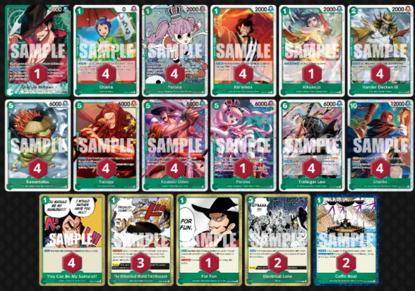
Trascrizione dell'immagine
Row 1 —
- 1x Dracule Mihawk (leader, power 6000)
- 4x Otama (cost 1, power 0)
- 4x Perona (cost 1, power 2000)
- 4x Kin'emon (cost 1, power 2000)
- 1x Kikunojo (cost 1, power 2000)
- 4x Vander Decken IX (cost 2, power 2000)
Row 2 —
- 4x Kawamatsu (cost 5, power 6000)
- 4x Yasopp (cost 5, power 6000)
- 4x Kouzuki Oden (cost 5, power 6000)
- 1x Perona (cost 5, power 6000)
- 4x Trafalgar Law (cost 6, power 6000)
- 4x Shanks (cost 10, power 12000)
Row 3 (events/stages) —
- 4x You Can Be My Samurai!!
- 3x The Billion-fold World Trichiliocosm
- 1x For Fun
- 2x Electrical Luna
- 2x Coffin Boat
Total: 50 cards + 1 leader. Card IDs are not legible under the SAMPLE watermark.
Decklist & Tech Options
This is the decklist I played at Mera Mera Fruit, where I finished with an 8–1 score.
Let's walk through it.
I'll explain every single card choice, why it's in the deck, and some of the changes I would make to the list right now.
The Non-Movable Core
- 4x Perona
- 4x Otama
- 4x Kin'emon
- 4x Law
- 4x Oden
- 4x Yasopp
- 3–4x Shanks
- 3–4x You Can Be My Samurai!!
- 3–4x Decken, alongside the Fish-Man support package
- 2/3x coffin boat
This is the core of the deck and what makes Mihawk function.
There isn't really much room for discussion here: these cards are simply too important to how the deck operates, and I wouldn't consider cutting any of them entirely.
The exact ratios of Shanks, You Can Be My Samurai!!, and Decken can move between three and four copies depending on the expected meta and the rest of your list.
We'll talk much more about some of these cards when we get into specific matchups, because their value—and the way you should use them—can change significantly depending on what you're playing against.
New decklist update
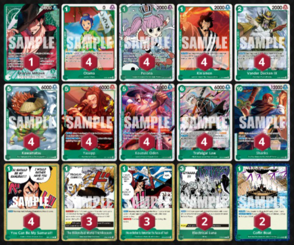
Trascrizione dell'immagine
Row 1 —
- 1x Dracule Mihawk (leader, power 6000)
- 4x Otama (cost 1, power 0)
- 4x Perona (cost 1, power 2000)
- 4x Kin'emon (cost 1, power 2000)
- 4x Vander Decken IX (cost 2, power 2000)
Row 2 —
- 4x Kawamatsu (cost 5, power 6000)
- 4x Yasopp (cost 5, power 6000)
- 4x Kouzuki Oden (cost 5, power 6000)
- 4x Trafalgar Law (cost 6, power 6000)
- 4x Shanks (cost 10, power 12000)
Row 3 (events/stages) —
- 4x You Can Be My Samurai!!
- 3x The Billion-fold World Trichiliocosm
- 3x I Never Bother to Remember the Faces of Trash
- 2x Electrical Luna
- 2x Coffin Boat
Total: 50 cards + 1 leader. Compared with the previous list, Kikunojo and the 5-cost Perona and For Fun are gone, replaced by 3x I Never Bother to Remember the Faces of Trash.
Lately i've been testing the "i never bother to remember the face of thrash" mihawk card from op14 and i've been loving how versatile it feels.
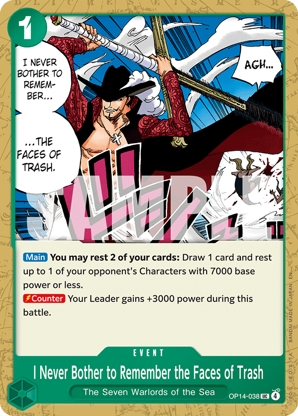
OP14-038The card shines the most against robin and the entire elbaph package as it allows us to trade their 2c pieces before they even get to 5k , more than that it's an insane starving card overall as it allows us to always have something to attack onto and never waste turns not swinging.
Also against robin is particularly strong, as its effectively an extra yasopp everytime and allows us to clear board before 10c mom turns, effectively increasing the duration of the game in our favor.
In mirror is also particularly strong as it allows us to break through some spots where us and our opponent are even in searchers in board.
moreover, it's a 3k counter card , allowing us to counter out of 7k swings in the midgame without having to waste 2 cards out of our hand or take lifes that we woulnd't want to take.
the card, to me, feels genuinely broken, and I'm in love.
3.1 Card by card explanation
Perona
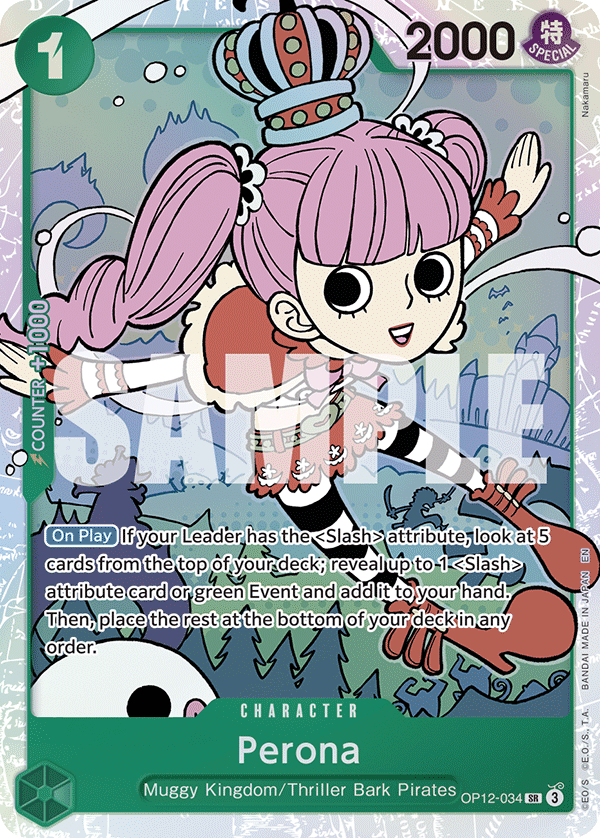
OP12-034Main searcher of the deck and absolutely crucial for the deck to function.
Kin'emon
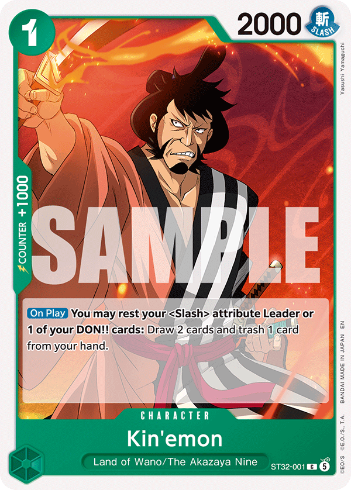
ST32-001Extremely powerful card draw , sometimes even better than perona since he can essentially "search" for decken or other cards that perona cannot hit, another very important thing about kin'emon is the fact that le allows us to filter out our junk cards that we do not need in a given matchup.
Otama
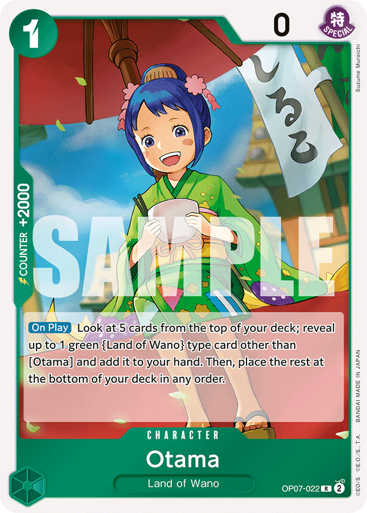
OP07-022another searcher of the deck, weakest of the three but its a 2k counter so it balances out, the deck needs to run this many seacher as a lot of our strong plays relay around having something to tap on the board and because of 6c law also, otama adds Oden and Samurai mainly, as well as kin'emon generally we want him in the early game.
Be very careful when playing her as your taking a 2k out of your hand, ask what are you searching for or if there is a clear reason you are playing her.
Trafalgar law
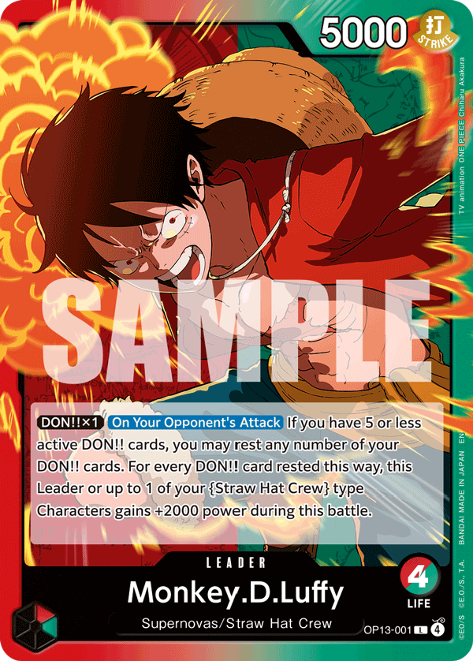
OP13-001Our midgame engine, for 6 don we get to play 11 don worth of cards for essentially no minus whatsoever out of our hand ( he picks up a searcher from the board while usually playing yasopp or oden that draw) We always want to see at least 2 copies of him in the early mid game as we want to play him on 6/7/8/9 then it's very good to have a third copy in the late game as sometimes it's a better play over shanks, or at very least if we dont have shanks. Because of that, its a staple 4 copies in any mihawk list, bounce back the decken and use it again and again eheh.
Kozuki Oden
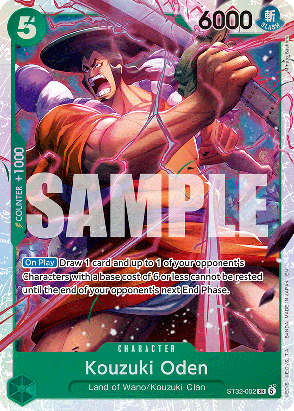
ST32-002One of the strongest 5c cards in the game btw. Good stats, insane effect, searchable with all our searchers, playable with law, need i say more?
Yasopp
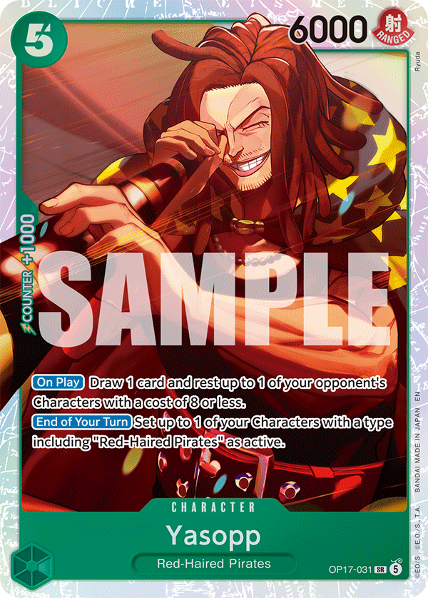
OP17-031Do you know you have a son!?!?
Anyway, card is absolutely insane, unfortunately can't be searched by any of our seachers, but it's absolutely crucial in many matchups or at least a gigant powerplay in many of them, against robin for example, if we see 2/3 in a row, we are usually chilling.
10c Shanks and Vander Decken
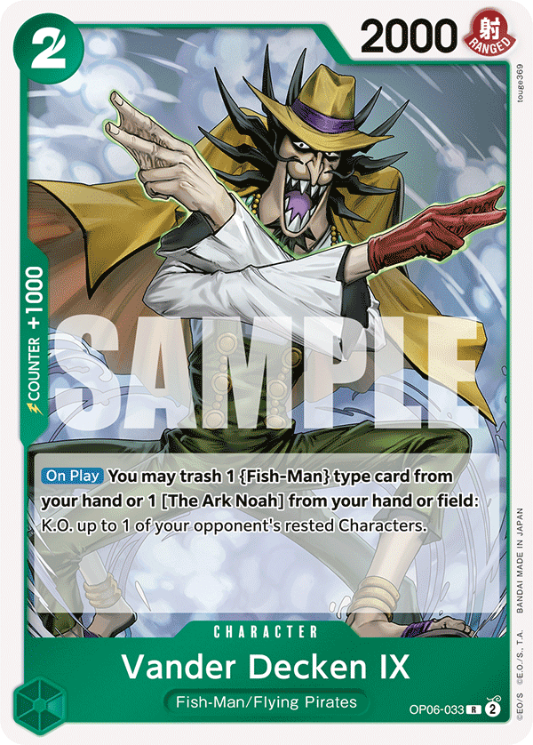
OP06-033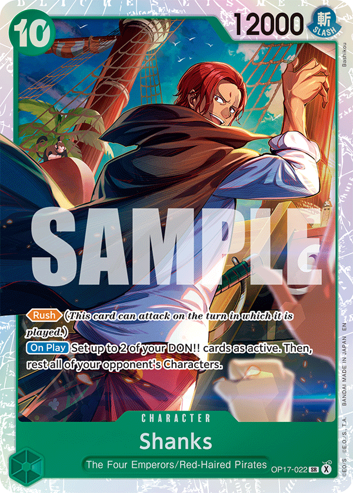
OP17-022Ok so you're telling me that we can play a 10c 12k rush that TAPS the entire enemy board and he will also reactivate 2 our of our dons to conveniently play a card whose effect is "kill 1 rested card".
This is the combo that ultimately makes this deck disgusting of course, both cards are insanely strong stand alone too, especially shanks which allows us to do whatever we want in the turn we play him, either stabilize entire board states or go super aggro and freeze/control board with luna and or decken.
Insane.
Kawamatsu
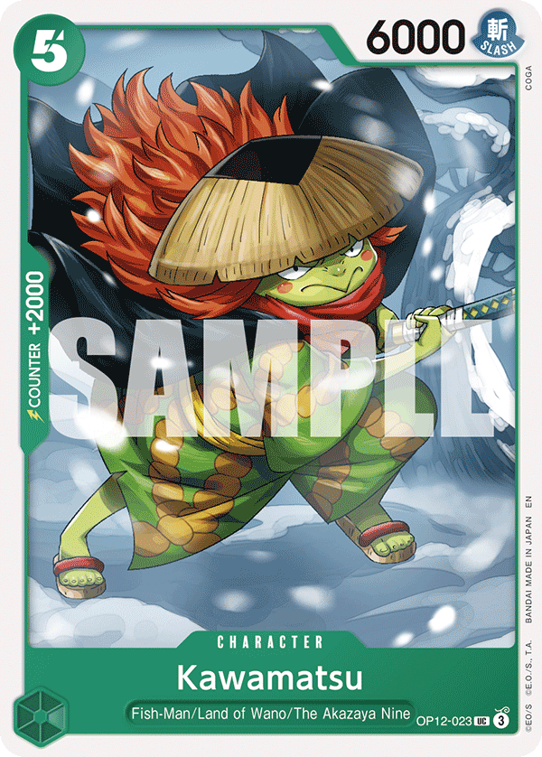
OP12-023This is a custom card. Literally. Custom card that was specifically made for this deck and you can't convince me otherwise.
FISH
2K COUNTER
5C 6000
SLASH
LAND OF WANO
HELLO?!
For fun
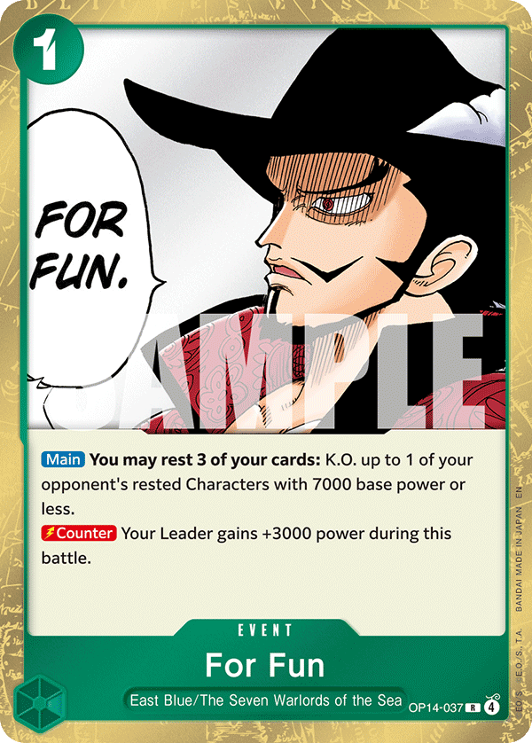
OP14-037For Fun is consistently strong in almost every matchup, but there are a few situations where having access to it becomes particularly important.
Most notably, we need it against Black Luffy and Red/Black Sabo as an answer to 6c Docking.
It's also very strong in the Mihawk mirror because it gives us access to powerful board-clear turns that can immediately push an existing advantage even further.
That being said, I don't specifically love For Fun in the mirror.
A lot of the time, I see it as more of a win-more card: it's incredible when you're already in a position where you can take advantage of it, but it isn't necessarily the card that's going to save you when you're behind.
Reccomended ratios:
I would play:
- 2x if Black Luffy and Red/Black Sabo are expected to be heavily represented at a tournament.
- Otherwise, I'd stick to a 1/3 split between For Fun and Billion-Fold.
The Billion-Fold world trichiliocosm
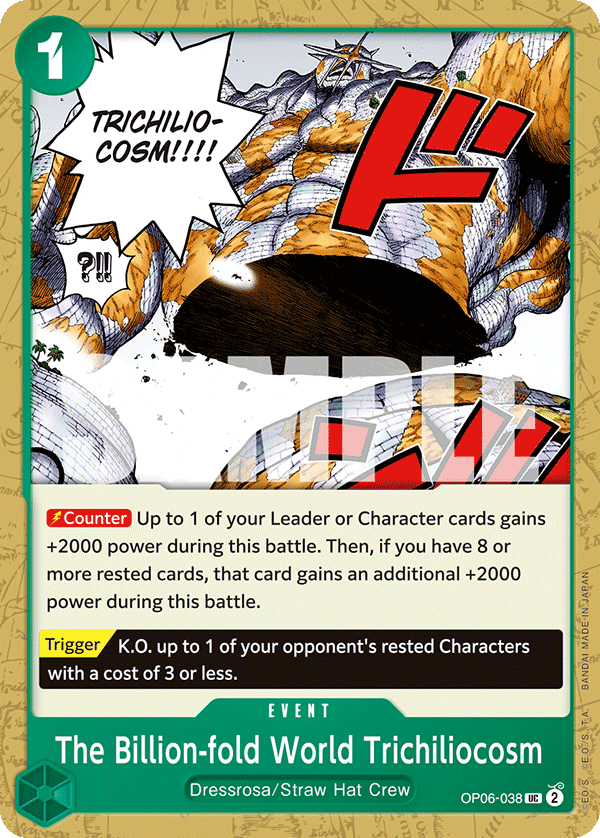
OP06-038A 4k counter most of the time.
It goes without saying that this card is strong as fuck.
What makes Billion-Fold especially valuable, though, isn't just the raw counter efficiency. It also gives us the ability to efficiently defend our important board pieces.
That matters a lot in Mihawk, where keeping the right character alive can completely change the structure of the following turn.
Because of that, I currently consider Billion-Fold at least a 3-of in the deck.
You can be my samurai
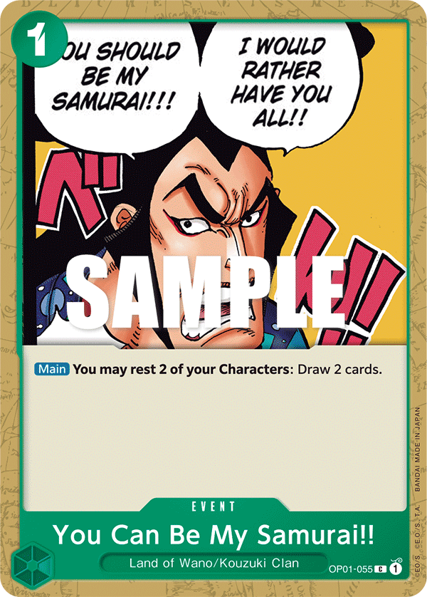
OP01-055The best card to ever be printed finally sees some play lets go!
Ok so if you know anything about me is the fact that since op01 i always wanted to play samurai and NEVER could EVER in any deck until now.
Bruh everytime any green was meta i was like CAN WE PLEASE PLAY SAMURAI.
Unfortunately, most of the time the answer was a clean no.
the reason why is that even tho 1don draw 2 is INSANE.
the condition could never be activated by any deck consistently ever, except for mihawk of course.
Now mihawk has accesso to 12 small bodies, and sometimes even big bodies you dont really care about tapping them the turn they are played.
because of that, we consistently are able to activate this card with 0 drawback from his cost, in mihawk, this card is goated, period.
Electrical Luna
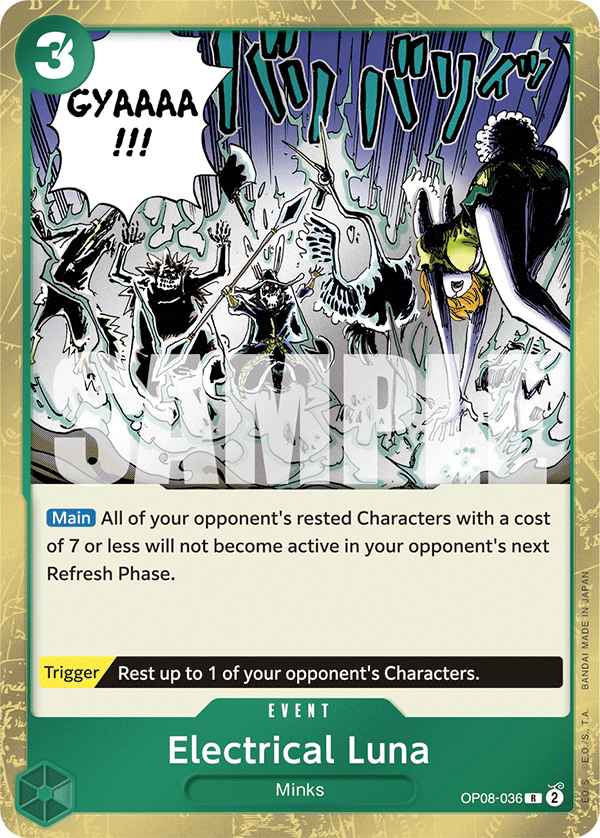
OP08-036If I have to be honest, I didn't particularly love Electrical Luna at this event.
Across roughly 20 games, there was only one game where Electrical Luna would have been genuinely key—and I still ended up losing that game because I didn't see the card anyway.
If you play Mihawk in a more control/tempo-oriented way—which you usually will if you're playing the deck correctly—Electrical Luna will almost always generate only around +1 in value at best.
Because of that, I'm seriously considering cutting Electrical Luna entirely and using those slots to increase the overall consistency of the deck. Even simply adding more 2k counters might end up being more valuable.
Electrical Luna in the mirror
The mirror is where my opinion of Electrical Luna changed the most.
It consistently felt like a card you wanted to play when you were already behind. The problem is that even in those situations, it rarely felt powerful enough to completely swing the game back in your favor.
Something like 5c Perona, for example, often felt significantly better.
While Electrical Luna can help you recover tempo, 5c Perona interacts with your opponent's board while simultaneously progressing your own. In a matchup where maintaining board presence and staying ahead on tempo are incredibly important, that difference matters a lot.
For now, I don't consider Electrical Luna part of the core of the deck, and it's one of the first slots I would look at when trying to improve the consistency of the list.
5c Perona
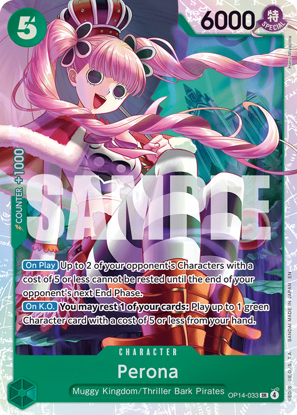
OP14-033I absolutely loved 5c Perona throughout the entire tournament.
The easiest way to describe her is as a sort of "mini-Electrical Luna" that also develops a body.
When you play 5c Perona, you can immediately rest her—similarly to Yasopp—without much of a downside. Your opponent can't really trade efficiently into her, which means you can freely use her for either your Leader ability or You Can Be My Samurai!!.
She also almost always has two relevant targets.
Because of that, even at her floor, 5c Perona generally generates at least +1 in value by effectively saving us two counter cards that we would otherwise have needed to use.
Perona in the mirror
Like Electrical Luna, I found 5c Perona especially strong when we're behind in the mirror.
The major difference is that 5c Perona is also insane when we're ahead.
She allows us to interact with the opponent's board while simultaneously developing our own, which makes her much less situational than Electrical Luna.
That's a huge distinction.
Electrical Luna often feels like a card we're hoping will help us recover from a losing position. 5c Perona, meanwhile, can help stabilize when we're behind and compound our advantage when we're ahead.
Because of that, I currently think I'll be playing 5c Perona at 2 copies, potentially even more, in future versions of the deck.
Kikunojo
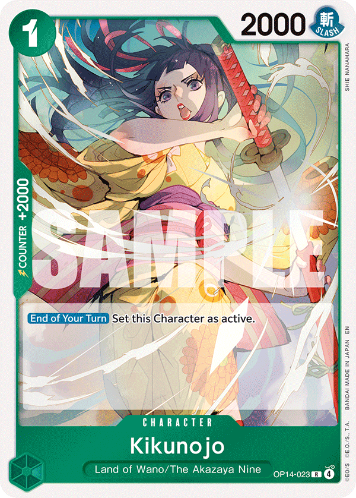
OP14-023I loved Kikunojo throughout this event.
One of the biggest reasons is simply that she's an additional 2k counter, which comes in clutch surprisingly often and helps improve the overall defensive consistency of the deck.
At the same time, Kikunojo can essentially function as a stronger third copy of Stage, since she can also be rested for You Can Be My Samurai!! when needed.
Of course, we'll always prefer seeing Stage over Kikunojo for that specific purpose, but Kikunojo makes up for it by being much more flexible: she's an Otama target, she's a 2k counter when we don't need to play her, and she can still contribute to our You Can Be My Samurai!! engine.
That flexibility means she's almost never completely dead.
Because of this, I think Kikunojo will probably always have a place somewhere in my list, most likely at 1–2 copies.
The exact ratio will depend on how I want to balance the number of Otama targets with the overall 2k counter count of the deck.
5c Bonney
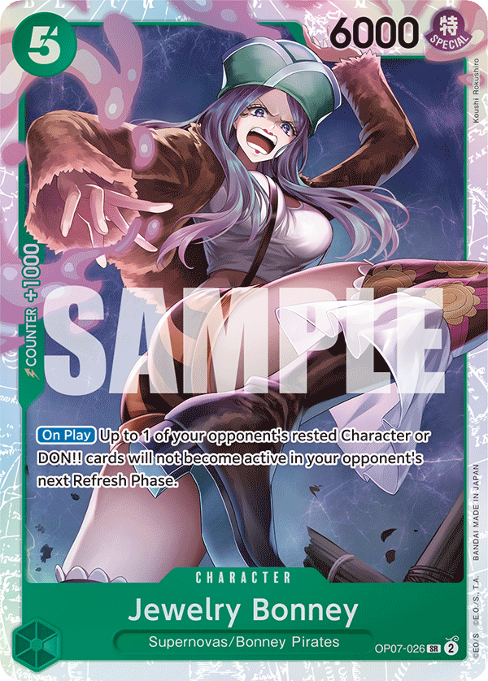
OP07-026Initially, I wasn't particularly impressed by 5c Bonney, but I'm starting to like the card more and more as Robin becomes increasingly represented.
The important thing about 5c Bonney is understanding the specific turns where her effect can disrupt an opponent's curve.
There are several particularly strong spots:
Vs Blackluffy/RedBlackSabo
7 DON!! turn:This is probably the most important timing. 5c Bonney can lock down the opponent's Rush Luffy turn, disrupting one of their strongest tempo plays.
5 DON!! turn:You can also use 5c Bonney to lock down Loki.
This is weaker than preventing the Rush Luffy turn, though. If I only have one 5c Bonney, I'd generally rather hold her for the following turn instead of immediately using her to stop Loki.
Vs Robin
The turn before Robin reaches 10 DON!!:This is one of 5c Bonney's strongest timings.
There is one extremely important detail to remember: Robin can use Giant to restand the DON!! that you froze.
Because of that, always attack first before committing 5c Bonney and freezing the DON!!.
Vs Mihawk
5 DON!! turn:Playing 5c Bonney here prevents the opposing Mihawk from comfortably accessing Law or Mihawk on curve.
This can be a very strong tempo interruption in the mirror, especially when combined with an already favorable board state.
Overall, 5c Bonney isn't a card I initially considered particularly impressive, but the more I've played with her—and the more the meta has developed—the more relevant her specific disruption windows have become.
Conclusion
As always, decklist is heavily dependent on the expected meta, think about what you are expecting in your next tournament, and plan accordingly.
Sometimes is also completely right to tech for matchups where you don't feel super confident and instead take away cards for matchups where you feel completely fine anyway.
Decklists are never the ultimate fixed perfect 50 cards, sometimes you have to adapt them to your own knowledge of the format and what you feel confident piloting.
Continue to next page →
Main Section (English) 4. General deck strategy
4. General deck strategy
Trascrizione verbatim dalla guida di Rondino.
4. General deck strategy
Understanding Mihawk
You can think of Mihawk primarily as a Tempo/Midrange deck that also has access to extremely effective aggro and control lines.
To me, it's one of the most complete toolboxes we may have ever seen in this game.
And because of that, I also believe Mihawk is one of the most skill-intensive decks we've ever had.
Not necessarily because of the microdecisions you have to make.
But because of the MACRO decisions.
Let me explain what I mean.
Understanding Your Win Condition
When a game starts and you're playing Sakazuki, you usually know almost immediately what your win condition is:
- Efficiently clear your opponent's board while developing your own, accumulate an advantage, and slowly snowball that advantage into a win.
- When you're playing Belo Betty, you also generally know what you're trying to accomplish.
- You're mostly going to unga bunga your way to victory.
- But when you're playing Mihawk, the game starts and sometimes you genuinely have no idea how the hell you're going to win yet.
- And that's completely fine.
- You might have to play a control game.
- You might simply establish a tempo advantage and snowball from it.
Or you might realize that the only realistic way to win the game is to completely switch gears, go aggressive, and try to kill your opponent before their advantage becomes relevant.
Mihawk is solid at doing all of these things.
And that's exactly where I've found the biggest skill expression of the deck.
Your job is not only to find the best play every turn, but to understand what kind of game you need to create
The strongest Mihawk players won't necessarily be the ones who make every small interaction slightly more efficiently.
They'll be the players who can recognize, as early as possible, which game plan gives them the highest probability of winning the specific game tree they're currently in.
And sometimes that means completely abandoning the way you would "normally" play the matchup.
A Real Example: Game 6 of My Mera Mera Run
I specifically had this realization during Game 6 of my Mera Mera run.
I was playing the Mihawk mirror.
I lost the dice roll and had to go first.
Then things got worse.
I missed all of my searches while my opponent opened with three of them.
At that point, I immediately realized something:
If I played this game normally, I was cooked.
Trying to play a standard value-oriented mirror against an opponent who had already seen significantly more cards than me wasn't going to magically make that card advantage disappear.
So instead of asking myself:
"What's the strongest play I can make this turn?"
I started asking a different question:
That's a fundamentally different way of thinking.
I started looking for information that could give me an alternative win condition.
And I noticed something.
My opponent was discarding a lot of 2k counters very early in the game.
He had even discarded a Billion-Fold.
That information started changing the way I looked at the entire game.
Identify the winning line
I eventually came to a very simple conclusion:
My only realistic win condition was to aggro him.
Once I understood that, the next question became:
"Okay, which cards are actually strong if this is the game I'm trying to play?"
The list suddenly became extremely short:
- 5c Perona
- 5c Oden
- 6c Law
- Electrical Luna
- 10c Shanks— ideally at least two copies
And that's basically it.
Everything else became significantly less valuable.
This is where understanding your macro game plan completely changes how you evaluate individual cards.
Yasopp suddenly became garbage
Yasopp is obviously an extremely strong card in Mihawk.
But in this specific game?
Garbage.
Why would I spend 5 DON!! establishing a body that my opponent isn't going to waste time clearing when he can simply race me instead?
I also don't particularly care about resting his board.
I don't want to clear his board.
If we both transition into a value/control-oriented game, I'm going to lose. He started the game with a significantly better value engine than I did, so playing into that game plan would simply be accepting a losing position.
The card itself didn't become bad.
The role I needed it to perform became irrelevant.
That's an extremely important distinction.
Oden and Perona? Insane.
Now compare that to 5c Oden and 5c Perona.
These cards were exactly what I wanted.
They allowed me to establish bodies that my opponent actually had to spend time and resources dealing with, while simultaneously freezing his proactive plays.
That's perfect for the game I was trying to create.
I'm developing pressure while forcing him to react to me.
Every turn he spends answering my board is another turn where I can continue pushing the game in the direction I need.
Electrical luna? Insane.
Earlier in this guide, I explained why I wasn't particularly impressed with Electrical Luna throughout the tournament.
But remember:
Card strength is contextual.
In this specific game, Electrical Luna became insane.
I had already decided that I wasn't going to spend my resources efficiently clearing his board.
That meant I could reasonably expect him to eventually have three or more bodies established.
Suddenly, the exact condition that makes Electrical Luna powerful was naturally going to happen as a consequence of my own game plan.
So Electrical Luna went from being a card I generally wasn't impressed by to one of the best cards I could possibly find.
Your Game Plan Changes Your Searches
And this is where the entire concept comes together.
Because I understood immediately what kind of game I was playing, I could optimize all of my searchers around that specific win condition.
I wasn't searching for cards based on their general strength.
I wasn't thinking:
I was thinking:
That distinction is massive.
Every search gave me an opportunity to ignore cards that would normally be considered strong and instead dig specifically for the small group of cards that supported my new game plan.
And eventually, I won.
Several players who had been standing behind me watching the game told me afterward that they thought the position was basically unwinnable.
Maybe it was heavily unfavored.
But heavily unfavored doesn't mean unwinnable.
The important part wasn't finding some magical sequence of microdecisions that suddenly erased my opponent's advantage.
It was recognizing that the standard game tree was losing, abandoning it early enough, and deliberately creating a completely different one.
That's the core skill I want you to develop with Mihawk:
- Don't just ask yourself what the best play is. Ask yourself what game you're trying to play—and whether that game actually leads to you winning.
- Once you know the answer, your attacks, searches, sequencing, resource management, and even the value of individual cards can completely change.
One attack would've lost me the game.
And when I say that identifying your win condition matters, I mean it literally.
There is no way I would have won that game if I had redirected even a single attack into one of the bodies on my opponent's board instead of attacking Leader.
Not one.
If I had spent even one attack trying to control his board, he would have preserved enough counter to survive my final 10c Shanks lethal push.
And I would have lost the game.
100%.
That's what makes this example so important.
Once I identified that my only realistic win condition was aggression, I had to fully commit to it.
Attacking with a 8/9k on a character might have looked like the "safe" or "value-efficient" play in isolation. In a normal Mihawk mirror, it might even have been correct.
But it would have been completely wrong for the game tree I was trying to create.
Every attack into Leader wasn't just damage—it was forcing counter out of my opponent's hand and progressively bringing him into range of the eventual 10c Shanks lethal turn.
The final lethal worked because of all the pressure that came before it.
Had I wasted even one attack somewhere along the way, the math at the end of the game wouldn't have worked.
This is exactly why I consider Mihawk such a macro-intensive deck.
You can make a play that looks perfectly reasonable—even optimal—when viewed turn by turn, while that same play is actively lowering your chances of actually winning the game.
Once you've identified your win condition, every decision should be evaluated by one question: does this move me closer to that win condition?
In that game, clearing his board didn't.
Hitting his face did.
And the difference was literally one attack.
Because of all of this, i wont be talking here in this part of the guide about how you should play mihawk in the early/mid/ and late game, rather, ill talk about it in depth for every matchup.
Conclusion
Mihawk is a LOT about playing well macro-wise more than just optimizing every little micro interaction.
While something like enel almost always plays the same exact game and you tend to want to express your skill via optimizing every little sequencing troughout your turns.
Mihawk does almost exactly the opposite, sometimes sequencing within a turn is almost trivial with mihawk, your skill expression is in consctructing the entire game, and the fact that mihawk is so good at playing within different lines is what makes the deck so strong, and skilled.
Of course, you should strive to get the best out of both worlds, play every single turn perfectly while also constructing the game around your win conditions, every, single, time.
Now lets see how we do that in every matchup.
Continue to next page →
🗂 Carte citate nel capitolo indice del trascrittore
| ID | Nome | Note |
|---|---|---|
| — | Mihawk | Leader del deck; citato in tutto il capitolo, nessun ID mostrato |
| — | Sakazuki | Leader di confronto: win condition chiara fin da subito |
| — | Belo Betty | Leader di confronto: "unga bunga your way to victory" |
| — | 5c Perona | Nella lista delle carte utili al piano aggro; "Oden and Perona? Insane." |
| — | 5c Oden | Nella lista delle carte utili al piano aggro; "Oden and Perona? Insane." |
| — | 6c Law | Nella lista delle carte utili al piano aggro |
| — | Electrical Luna | Nella lista delle carte utili al piano aggro; "Electrical luna? Insane." — card strength is contextual |
| — | 10c Shanks | Nella lista delle carte utili al piano aggro, ideally at least two copies; carta della lethal push finale |
| — | Yasopp | Carta forte in Mihawk ma "garbage" in quella partita specifica (5 DON!! per un body che l'avversario non deve rimuovere) |
| — | Billion-Fold | Scartata dall'avversario come counter, informazione che cambia la lettura della partita |
| — | 2k counters | Scartati presto dall'avversario, informazione chiave |
| — | Enel | Citato nella Conclusion come deck di confronto (skill micro vs macro) |
5. The matchups bible
Trascrizione verbatim dalla guida di Rondino.

Vs Dracule Mihawk
5.1 The mirror match
OP14-020The Mihawk mirror is one of the most difficult matchups to pilot correctly, and it will probably be the matchup we analyze the most throughout this guide—especially in the gameplay/video section.
The most important concept in this matchup goes directly back to what we discussed in Understanding Mihawk:
MulliganMulligan Heuristics
The Mihawk mirror is extremely dependent on early setup, so the main goal of our mulligan is to guarantee enough searchers while maintaining a functional early curve.
Going 1st the hand is a clear Keep because we have perona Oden luna precisely, our hand is already telling us to play an aggro game and we can expect to be very good at that, if we find more searchers and yasopp and we see that our opponent starts somewhat slow, we can always try to pivot to something else later.
Going 2nd the 2nd hand is also a decent keep, we have 2 searchers as well as yasopp and the 1c spell that could be very strong in the scenarios in which our oppoent starts with <2 seachers.
TurnoGoing 2nd
Generally keep:
- 1 searcher + 5c Yasopp
- 2+ searchers
- 1 searcher + Stage
TurnoGoing 1st
Generally keep:
- 2+ searchers
- 1 searcher + oden
These are heuristics, not absolute rules.
As we go deeper into the matchup—and especially in the gameplay videos—we'll look at the situations where the rest of the hand is strong enough to justify deviating from these rules.
EarlyEarly Game — 1/2/3/4 DON!!
The first few turns are essentially all about setup and information gathering.
You're developing your searchers, building your hand, and—most importantly—trying to understand how the game is likely to develop.
Pay attention to:
- How many searchers you see
- How many searchers your opponent sees
- The quality of your hand
- What your opponent is searching for
- What answers you already have available
- How easily each player can set up future You Can Be My Samurai!! turns
- How strong each player's future For Fun turns are likely to be
From this information, you should already start asking yourself:
Searcher advantage
Generally, the player who sees more searchers is going to have an advantage in the long game.
More searchers means more cards, better access to specific answers, more opportunities to set up efficient You Can Be My Samurai!! turns, and better For Fun setups later in the game.
If you start the game seeing 3–4 searchers while your opponent only sees 0–1, you're already clearly ahead in terms of setup.
You can reasonably expect to generate more free value later in the game, and you're also going to have consistent access to 6c Law for the turns where you need him.
On the contrary, if you're behind on searchers and your opponent is already finding all of their important pieces, you need to recognize that the normal value game may not favor you.
Don't wait until you're completely buried in card advantage before realizing that you can't win the long game.
Mid5 DON!! turn
This is where we establish our first real body, and the correct choice depends heavily on the board state and the game plan we've identified.
Opponent has only 1 searcher : yasopp.
If the opponent has only one searcher on board, Yasopp is the absolute best play.
We can rest the searcher, trade into it, and deny our opponent the ability to use it for their 6c Law play on the following turn.
This is a very clean tempo swing.
Opponent has 2 or more searchers : Bonney
If the opponent already has two or more searchers available, Yasopp loses part of that value because denying a single rested body no longer stops their setup.
In this situation, 5c Bonney becomes our best play because we can freeze their DON!! and interfere directly with their following turn.
Oden vs Yasopp
This decision also depends on the macro game plan we've chosen.
If we are playing value/control
If the opponent has multiple searchers, I generally prefer:
Oden > Yasopp
The reason is that I want to preserve Yasopp.
Later in the game, Yasopp becomes much more valuable when I can use his effect to rest and trade into one of the opponent's actual 5c/6c pieces rather than wasting that utility on an early searcher.
If we are playing aggro
The logic completely reverses:
Yasopp > Oden
If I've already decided that I'm not interested in fighting for the opponent's board, Yasopp's future removal utility doesn't matter nearly as much.
I'd rather deploy Yasopp now and preserve Oden for later, when I can use him to freeze one of my opponent's important pieces while continuing to progress my aggressive game plan.
This is another perfect example of why cards don't have a fixed value in this matchup.
Their value depends on the game you're trying to play.
Mid6 DON!! turn
The general logic from the 5 DON!! turn continues here, with the exception of the specific 5c Bonney / Yasopp interaction against a single-searcher setup.
Our default development is going to revolve around 6c Law + body.
From here, the distinction becomes even clearer.
Value/control
If we're playing for value:
- Yasopp is generally the better body to develop.
- We want access to his board-control effect, and we're interested in efficiently trading resources with our opponent.
Aggro
If we're playing aggro:
- Oden becomes significantly better.
- We're not particularly interested in using Yasopp to control the opponent's board.
- Instead, we can develop Oden rested through 6c Law, freeze one of the opponent's pieces, and force them to potentially waste a large attack clearing Oden.
- That's exactly what we want.
- Every meaningful attack directed into our board instead of our Leader buys us more time to execute our aggressive plan.
MidMid game
From this point onward, our goal is to use our DON!! as efficiently as possible while constantly looking for opportunities to fit You Can Be My Samurai!! into our turns.
The priority changes depending on our game plan.
If we're playing aggro
Our priorities are generally:
1. Develop 6c Law + body2. Maximize pressure3. Attack with as much DON!! as efficiently possible—often 7k+ swings
We're deliberately sacrificing some potential value generation because ending the game is more important than winning the resource battle.
If we're playing value/control
Our priorities become:
1. Develop 6c Law + body2. Find efficient You Can Be My Samurai!! turns3. Maintain board control and card advantage
Here, I'm completely fine sacrificing attack size to generate more value.
Sometimes that means attacking for only 6k because the remaining DON!! allows me to fit You Can Be My Samurai!! efficiently into the turn.
Again:
Mid9 DON!! turn - 5c Bonney
At 9 DON!!, 5c Bonney becomes extremely strong again.
Freezing one DON!! here denies the opponent their natural 10c Shanks turn.
That forces them into something like another 6c Law development, 5c Bonney of their own, or another alternative line instead of progressing into 10c Shanks.
And that's extremely relevant because—
Playing 10c Shanks First Matters
Getting to deploy 10c Shanks before your opponent is a significant swing.
It's obviously extremely powerful when you're trying to win through aggression, but it's also very strong in a control-oriented game.
So being the first player who gets to establish 10c Shanks is a meaningful advantage regardless of which game plan you're currently following.
10c Shanks turns
Once we reach the 10c Shanks portion of the game, the basic decision tree becomes relatively simple.
Playing Control?Drop 10c Shanks → prioritize board.
Playing Aggro?Drop 10c Shanks → prioritize face.
If you have one or more Electrical Luna in hand and believe the game can end quickly enough, this can also be a spot where you transition into full aggro.
Remember what we discussed earlier: if you're no longer interested in clearing your opponent's board, they're naturally going to accumulate bodies.
That makes your eventual Electrical Luna significantly stronger.
Vander decken vs 10c Shanks
If your opponent establishes 10c Shanks, investing the 2 DON!! to clear it with your own Decken is probably correct around 90% of the time.
But not always.
This is exactly the kind of spot where blindly following a matchup rule can cost you the game.
Before playing Decken, ask yourself:
Imagine that you believe the game is ending next turn.
You've calculated that the opponent's 10c Shanks remaining on board doesn't kill you, and the additional 2 DON!! would allow you to create a significantly larger attack this turn.
In that situation, playing Decken can actually be a mistake.
You're spending 2 DON!! solving a problem that doesn't matter anymore.
If the game ends before that 10c Shanks gets another meaningful attack, then clearing it generated effectively zero relevant value.
Those 2 DON!! could instead be the difference between your opponent countering out of lethal and actually dying.
The core principle of the Mirror
The Mihawk mirror isn't simply about who generates the most value.
Early searcher advantage, hand quality, board development, available tech cards, and the opponent's resource usage should constantly influence your assessment of the game.
If you're favored in the long game, lean into it.
Generate value. Control the board. Fit in You Can Be My Samurai!!. Force increasingly inefficient trades until your advantage becomes overwhelming.
If you're losing that battle, don't mindlessly continue playing the same game.
Find another way to win.
And once you've identified that alternative win condition, commit to it.
As we saw in the earlier mirror example, sometimes even one unnecessary attack into an opponent's character instead of Leader can be the difference between your final 10c Shanks attack being lethal or your opponent surviving it.
We'll go significantly deeper into these decisions in the gameplay section, because the mirror has too many game states and branching decisions to reduce everything to a rigid turn-by-turn script.
What do you do if the opponent is starving you?
I don't think starving is ever a particularly valuable strategy in the Mihawk mirror because it loses very hard to a few simple adjustments.
Nevertheless, I've seen multiple players trying to starve in the mirror, so understanding how to respond to it is important.
And the adjustment is actually extremely simple:
Don't attack with your board and only attack with your leader.
That's basically it.
If your opponent's game plan revolves around starving you and generating value by controlling your board, simply stop giving them a board to interact with.
By keeping your characters active, you effectively make their entire board—and a significant part of their Leader's utility—useless.
Meanwhile, your searchers should heavily prioritize finding:
- 10c Shanks
- Electrical Luna
If you can accumulate enough 10c Shanks and Electrical Luna while denying your opponent value from their board every turn, they're eventually going to fall behind.
Usually, it only takes around 2–3 turns before the strategy starts collapsing.
The Yasopp Exception
The only way your opponent can efficiently maintain a starvation strategy is by seeing multiple Yasopp.
Since you're deliberately keeping your board active, Yasopp gives them a way to rest your characters themselves and create targets to attack into.
The adjustment here is equally simple:
Don't start investing cards from your hand trying to save that body.
Let it die.
Your opponent is trying to force you into spending defensive resources despite you refusing to voluntarily rest your board. If you start dumping counter into the character they rested with Yasopp, you're finally giving their starvation strategy the value it was looking for.
Accept the loss of the body and continue executing your game plan.
This is why multiple Yasopp are basically the only way your opponent can starve you somewhat efficiently—but even then, you don't need to play into it.
The Turn Before 10c Shanks
There is one other important exception to the "never attack with your board" rule.
The turn before your opponent reaches 10 DON!!, if you don't have 5c Bonney to freeze their DON!! and deny 10c Shanks, you should attack with your entire board.
Why?
Because those characters are going to be rested by 10c Shanks anyway.
Keeping them active no longer protects them from your opponent's next control turn, so there is no reason to leave that damage on the table.
This is essentially a free attack window.
If you do have 5c Bonney and can prevent the 10c Shanks turn, then the normal starvation counter-plan still applies and you can continue keeping your board active.
So the rule isn't literally "never attack with your board."
The real rule is:
That's the principle you should actually remember.
If you recognize the starvation plan early, deny value to their board, don't waste counter protecting characters rested by Yasopp, and correctly exploit the turn before 10c Shanks, you should essentially never lose to this strategy.
What to do when you are ahead
When you're clearly ahead in the Mihawk mirror, your thought process should change.
At this point, you don't need to ask:
"How do I create an even bigger advantage?"
Instead, ask:
Usually, there are only two realistic answers:
1. Your opponent successfully switches to an aggressive game plan.2. You miss one or more crucial development turns and give them enough time to recover.
Once you understand that, your priorities become very straightforward.
Start adding 10c Shanks and a large amount of counter to your hand.
Defend your life efficiently.
Make sure you continue hitting your crucial development turns.
And, most importantly, understand the clock of the game.
If you know approximately how many turns your opponent needs to kill you, how many turns you need to close the game, and how those clocks change depending on where you allocate your resources, it becomes extremely difficult for them to steal the game back.
This also means you shouldn't become greedy just because you're ahead.
You don't necessarily need to extract every possible point of value from You Can Be My Samurai!!, clear every opposing character, or create the biggest board imaginable.
Sometimes the correct play is simply to protect your life, keep enough counter in hand, develop 10c Shanks, and remove your opponent's only remaining path to victory.
Having a perfect understanding of the game's clock is what allows you to convert these advantageous positions consistently instead of giving your opponent unnecessary opportunities to come back.
Vs Sabo
5.2 RB Sabo
ID? — in basso a destra si legge solo "OP13-00_"Mulligan: 1 searcher perona/kinemon + law if second (or 2 searchers)
1 + searcher + oden/yasopp if first
Red/Black Sabo is a very linear matchup once we understand our primary win condition:
- Starve them, progressively remove their board, and stabilize on 10c shanks turn
- We want to play for maximum value and deny them life cards for as long as possible.
Once we successfully stabilize through one or two 10c Shanks, we will usually win the game from there.
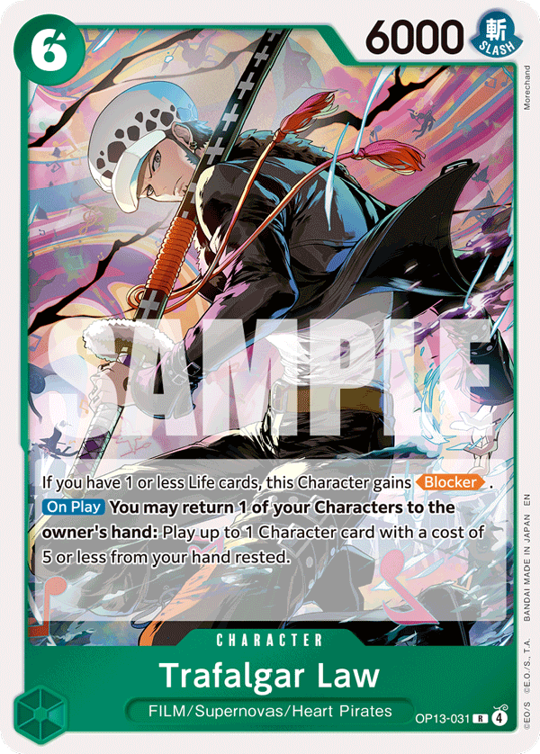
×2Generally any hand early game that has access to the 1c mihawk spell into elbaph package is a very very solid keep, this hand also has access to kinemon + yasopp, insane keep
Hand going 2nd unfortunately has no plays whatsoever except kinemon and lacks follow up, if we dont find anything decent off of kinemon è draws on 6 we may play law only and from there the game is very bad, way better to mull.
Starving and clearing the board
We generally want to attack with our entire board and maximize the pressure we're putting into their characters.
An important part of this is attack sequencing.
For example:
- Our opponent has a 6k character on board.
- We have three attackers and 3 DON!! available for attacks.
Instead of immediately committing everything into one large swing, we can sequence:
- 6k
- 6k
- 9k
This creates multiple good outcomes for us.
If they give up the character against one of the first two attacks, perfect.
We no longer need to invest the remaining DON!! into clearing it, so we can redirect those resources into searchers or You Can Be My Samurai!! and generate additional value.
If they counter out of the first attacks, we're also happy.
They're spending cards protecting a character while we're starving their Leader.
We can then make the final 9k attack and potentially finish the character anyway.
And if they continue fully countering?
That's also fine.
They're burning through their hand while receiving no additional resources from life.
This is exactly the kind of exchange we want.
What do we search for
Our search priorities are relatively straightforward.
We want to find 1–2 copies of 10c Shanks.
Usually, that's all we need.
Once those are secured, we should prioritize:
Counter + 6c Law
We don't need to endlessly accumulate 10c Shanks. We need enough copies to guarantee our stabilization turns, then we want the rest of our hand to actually survive long enough to reach and capitalize on those turns.
Yasopp vs Oden — Sequencing Matters
Sequencing Yasopp and Oden correctly is particularly important in this matchup.
Imagine the opponent has:
1 rested character + 1 active character
We generally want to attack the rested character before deciding whether to develop Yasopp or Oden.
Why?
Because the result of those attacks gives us information.
EarlyThe rested characters die early
If the rested character dies and we still have attacks remaining, we can play Yasopp.
Yasopp can rest the other character, allowing our remaining attacks to continue clearing the board.
The rested characters die on our final attack
Now Yasopp no longer accomplishes the same thing because we don't have another attack available to capitalize on the rested character.
In this situation:
Oden > Yasopp
We can use Oden to freeze the remaining character instead.
This is a small sequencing decision, but these are exactly the spots where waiting for information before committing your play can generate additional value.
Dealing with 6c Loki
There's another important interaction to understand when dealing with 6c Loki.
It can sometimes be correct to intentionally leave 6c Loki unfrozen.
This may initially seem counterintuitive because freezing it looks like the obvious control play.
But think one turn ahead.
If we leave 6c Loki available, our opponent is incentivized to attack with it.
Once they do, 6c Loki becomes rested.
And now we can clear it with Decken before reaching our 10c Shanks turn.
That can make our eventual stabilization turn significantly cleaner.
Instead of reaching 10 DON!! with 6c Loki still being one of the problems we need to solve, we've already removed it and can use 10c Shanks to stabilize the rest of the board.
So don't automatically freeze 6c Loki just because you can.
Ask yourself:
- Would I rather prevent this character from attacking, or let it attack so I can remove it before my Shanks turn?
- Sometimes leaving it "free" is actually the stronger control line.
Defending life
This is extremely important:
- Counter out of every attack that costs us only one card whenever possible—even the first attack of the game.
- The exception is when doing so would require discarding one of our important future plays.
- We want to preserve our life total because we're deliberately starving our opponent.
The longer we stay at high life while their hand and board are progressively depleted, the more difficult it becomes for them to create a realistic lethal turn before we stabilize.
This is also why counter density matters so much in this matchup.
The 10c Shanks Stabilization Turn
Everything we're doing throughout the early and mid game is preparing for this point.
We're starving their Leader.
We're forcing counter out of their hand.
We're progressively clearing their board.
We're preserving our own life.
We're finding 10c Shanks.
And we're trying to manipulate the board so that when we finally reach 10 DON!!, 10c Shanks can efficiently deal with whatever remains.
Once we've stabilized through one 10c Shanks—and especially after the second—the matchup usually becomes extremely difficult for Sabo to recover.
Only after their board has been sufficiently controlled do we transition away from starvation and start attacking their Leader.
So the matchup can essentially be summarized as:
- Starve
- Trade into Board
- Preserve Life
- 10c Shanks
- Stabilize
- Attack Face
Don't rush the last step.
The biggest mistake you can make is giving Sabo additional cards from life while they still have a threatening board and you're already naturally favored if the game reaches your stabilization turns.5c Bonney on the 7 DON!! Turn
5c Bonney is extremely strong on our 7 DON!! turn.
This is one of the most important timings for the card in the matchup because freezing one of the opponent's DON!! prevents their Rush Luffy play on the following turn.
That's extremely valuable for our overall game plan.
We're trying to starve, preserve our life, control their board, and safely reach our 10c Shanks stabilization turn. Denying Rush Luffy directly supports every part of that plan by removing one of their strongest proactive turns.
Because of this, 5c Bonney should be considered one of our strongest 7 DON!! plays in this matchup whenever freezing their DON!! successfully denies Rush Luffy.
Vs Monkey.D.Luffy (Black Luffy)
5.3 Black Luffy
ID? — in basso a destra si legge solo "OP17-07_"Any going 2nd hand where you have searcher + seacher + samurai is generally very good consistency wise, ESPECIALLY against matchups with low a amount of small drops to contest our board the going 1st is a super debatable mull/keep, probably close to 50/50, in tournament, i think i would keep , even without seachers we go spell on his 2c drop into oden/yasopp depending on his 4 don turn, very solid.
MulliganMulligan - Going first
When going first, we're looking for:
- Stage / Searchers
- Oden
- 5c Perona
- 6c Law
Remember what we're trying to accomplish:
- Setup
- Develop Tempo
- Freeze
- Race
We're not building our hand for a prolonged control game.
Search priority
Our searchers should prioritize:
- Electrical Luna
- 10c Shanks
- 6c Law
- additional Oden
Obviously, the exact priority can change depending on what we already have in hand, but these are the pieces that most directly support our aggressive game plan.
MulliganMulligan - Going second
Going second, we're looking for:
- Yasopp
- Searchers
- 6c Law
- For Fun
Now our hand is being constructed for an entirely different game.
We're trying to starve, control the board, and reach our stabilization turn.
Search priority
Prioritize:
- 10c Shanks
- 6c Law
- Counter Events
Once we have the development pieces required to reach our late game, we want enough defensive resources to actually get there comfortably.
Black Luffy is considerably trickier than Red/Black Sabo.
The main reason is that Black Luffy runs out of resources much more slowly and has constant access to 8c Rush Luffy thanks to Gerd.
Because of this, the matchup changes dramatically depending on whether we're going first or second.
TurnoGoing first - Full race
Going first, we can't realistically starve Black Luffy.
If we try, their ability to continuously generate resources and access 8c Rush Luffy will eventually overwhelm us.
So we need to accept that immediately and play a completely different game:
We're racing.
This is one of the matchups where understanding your macro game plan from Turn 1 is extremely important.
We're not trying to win a long, beautiful value game.
We're trying to kill them before their engine kills us.
Oden and 5c Perona
Because we're playing for tempo and aggression, cards like Oden and 5c Perona become insane.
They accomplish exactly what we want:
We're progressing our clock without spending attacks trying to control their board.
What do we actually clear?
We generally clear the first small body they develop on their 2 DON!! turn.
After that:
Stop attacking their small bodies. Go face.
From this point onward, we want to freeze their board with cards like:
- Oden
- 5c Perona
- Electrical Luna
and continue attacking Leader.
Why?
Because if we waste our attacks clearing small characters that Black Luffy can easily replenish, we're going to lose the race.
Essentially 100%.
We're spending our finite offensive resources solving problems that our opponent can cheaply recreate.
Instead, let those bodies accumulate.
That's actually beneficial for us because it makes Electrical Luna significantly stronger.
So rather than repeatedly clearing small characters:
- Freeze them
- ignore them
- pressure Leader
- eventually punish the accumulated board with Electrical Luna
Play for Electrical Luna
This is one of the scenarios where Electrical Luna becomes extremely important.
Remember the concept from earlier in the guide:
- The strength of Electrical Luna depends heavily on the type of game we're creating.
- Here, we're intentionally refusing to clear most of their smaller bodies.
- That naturally creates the exact board state where Electrical Luna becomes powerful.
- We're effectively allowing their board to grow because we have a future tool that can exploit it.
Dealing with their bodies
While we ignore most of their small characters, their big bodies are a different story.
This is where Decken becomes extremely important.
We want to maintain our aggressive tempo while using Decken to efficiently remove the large threats that could otherwise completely swing the race.
This distinction is important:
- Small bodies
- Freeze / Ignore
- Big bodies
- Decken
Don't waste attacks doing something Decken can accomplish much more efficiently.
10c Shanks — Face or Board?
The attack from 10c Shanks deserves significantly more thought in this matchup than simply following a fixed rule.
Every time you attack with 10c Shanks, ask yourself:
Is it more valuable to accelerate my clock or slow down theirs?
In other words:
Do I take one life?
or
Do I clear one of their major bodies?
There isn't one universal answer.
Look at your hand.
Look at your counter.
Look at their remaining life.
Look at the number of attacks they can produce.
Look at how close you are to lethal.
Then compare the two clocks.
Sometimes attacking face brings them into guaranteed lethal range next turn.
Sometimes removing a large character buys you the additional turn you need to win.
This is another spot where the correct play comes from understanding the game state rather than blindly following a matchup rule.
Dealing with 6c Loki
Generally:
- Always freeze 6c Loki.
- This is different from the Red/Black Sabo matchup.
- Here, the alternative attacker—4c John—only attacks for 6k rather than 7k.
- That makes the attack significantly easier for us to counter out of efficiently.
- So we'd generally rather freeze 6c Loki and allow the weaker 4c John attack.
Exception:
If we don't have a 2k counter available, we can consider doing the opposite.
Freeze 4c John, allow 6c Loki to attack, and then use the fact that 6c Loki is rested to clear it with Decken before our 10c Shanks turn.
Again, the rule exists for a reason—but your hand can change the correct decision.
TurnoGoing second - Starve
Going second, the matchup becomes considerably easier.
Now we can actually execute the starvation/control plan.
The scariest card we're dealing with becomes Pirate Docking 6.
But because we're starving our opponent, we have multiple ways to deal with it.
Dealing With Pirate Docking 6
Our cleanest answer is:
For Fun
This is one of the main reasons we discussed potentially increasing the number of For Fun in metas where Black Luffy is heavily represented.
But we don't necessarily need For Fun every time.
Because we're starving Black Luffy, we can also simply attack Pirate Docking 6 with very large swings and force them into an awful decision.
The logic is very similar to the Red/Black Sabo matchup.
If they give up the body, great.
If they protect it, they're burning through a hand that we're deliberately preventing them from replenishing through life.
Both outcomes progress our game plan.
LateStabilizing at 10 DON!!
Just like against Red/Black Sabo, we're generally looking to stabilize around our 10 DON!! turn with 10c Shanks.
Once we've successfully stabilized their board, the matchup becomes significantly easier.
From that point onward, the main thing we need to continuously respect is their access to 8c Rush Luffy.
Don't become careless just because you've cleared their board.
Their ability to suddenly generate additional pressure through 8c Rush Luffy is one of the main ways they can still steal the game.
Tha matchup in one concept
Black Luffy is one of the clearest examples of why Mihawk can't be played on autopilot.
The exact same matchup produces two almost opposite game plans depending on who goes first.
- Race
- Ignore small bodies
- Freeze
- Electrical Luna
- Decken big threats
- Find lethal
- Starve
- Control board
- Preserve resources
- 10c Shanks
- Stabilize
Trying to force the same strategy from both positions is a mistake.
Going first, you're asking:
"How do I kill him before his engine overwhelms me?"
Going second, you're asking:
- "How do I deny him enough resources that his engine never gets the chance to overwhelm me?"
- Understanding that difference before the game even begins makes the matchup dramatically easier to navigate.
Vs Nico Robin (PY Robin)
5.4 PY Robin
ID? — in basso a destra si legge «DP09-062», lettura incertaMulliganMulligan heuristics
Our mulligan going first or second is essentially the same in this matchup.
We're looking for hands that guarantee early setup while giving us access to Yasopp, which is by far one of our strongest early-game cards against Robin.
Generally keep:
- 2+ searchers
- 1 Yasopp + 1 searcher
- 2+ Yasopp
This matchup is fairly tricky to play.
I remember playing my first games against Enrico and getting absolutely steamrolled. Then, as my artificial intelligence started recognizing more and more patterns, I gradually began winning.
At this point, I would say the matchup is very close to even.
And it's very, very hard for me to lose to a Robin that isn't Enrico—or doesn't Oven trigger first life!!!
Going 2nd with 3 searchers? say less.
searcher seacher + samurai + yasopp in hand is also very solid going 1st
Accept the Yellow triggers
Unfortunately, Robin, like any Yellow deck, is always going to introduce a significant amount of randomness into the game.
And we're particularly exposed to it in this matchup because we HAVE to aggro.
That means we're attacking into life repeatedly, which naturally gives our opponent more opportunities to find high-impact triggers.
In Round 1 of finals, I played against a Robin that triggered:
- Oven
- Oven
- 8c Teach
from their first three life cards.
There's nothing you can realistically do there.
Period.
Sometimes Yellow is going to Yellow.
But that doesn't mean we should play scared of triggers and abandon our optimal game plan.
Why we have to aggro
The fundamental problem is very simple:
- Robin scales better than we do.
- Her late game is simply insane.
- Because of the nature of the Leader's Banish ability, the longer the game progresses, the more uncomfortable the game becomes for us.
- Turn after turn, Banish forces actual cards out of our hand instead of allowing life to function as an additional resource.
- Meanwhile, Robin continues gaining access to extremely powerful late-game plays, healing, and Gum-Gum Giant.
- Our power curve is different.
LateWe peak at 10 DON!! with 10c Shanks + Decken.
That's the point where our deck reaches one of its strongest possible board swings.
Robin, meanwhile, keeps going.
So we're playing against a clock.
We need to generate enough value and pressure before Robin's late-game engine becomes overwhelming.
Don't let Robin Stabilize
Robin's best chance of winning this matchup is to stabilize by controlling our board.
Once that happens, she can deal with a small number of remaining attackers relatively easily thanks to constant healing and Gum-Gum Giant.
So our fundamental objective should be clear:
- Play a fast race and don't allow Robin to stabilize the position.
- We need bodies.
- We need pressure.
- And we need to keep forcing Robin to answer multiple threats.
Yasopp is insane
Because of this, Yasopp is one of our absolute best cards in the matchup.
By a big margin.
In the early game, Yasopp essentially allows us to develop a body that Robin has a difficult time contesting while simultaneously clearing one of her 4k bodies that could otherwise become an 8k attacker.
We're simultaneously progressing our clock and reducing hers.
That's exactly what we want.
Some of our strongest possible early sequences are therefore:
- 6c Law
- Yasopp
- 6c Law
- Yasopp
or
- Yasopp
- 6c Law
- Yasopp
- 6c Law
- Yasopp
It's pretty straightforward.
Develop. Develop. Develop.
We want to continuously put bodies onto the board and prevent Robin from ever reaching a comfortable position.
5c Perona and Oden are also completely fine.
The important thing is that we're developing board.
10c Shanks + Vander Decken
The other premium interaction in this matchup is:
10c Shanks + Decken
This is one of our strongest plays because it gives us the ability to create a massive swing while still progressing our own threat density.
And, most importantly, it happens exactly around the point where we need to make a decision about how this game is going to end.
Respecting banish
Whenever Robin attacks for 5k/6k with Banish, think ahead before deciding whether to take the attack.
Whenever reasonably possible, we want to counter.
If we can't, having one life banished is acceptable.
Having two life banished is usually already very, very bad.
Remember that life isn't just life in this matchup.
Every card that gets banished is a card that never reaches our hand.
That progressively reduces our ability to defend, develop, and eventually create lethal.
So don't evaluate a Banish attack the same way you would evaluate a normal 5k/6k attack.
Attack for 7k
Whenever possible, prioritize attacking for 7k with both your Leader and your board.
A strong Robin player is generally going to counter out of most attacks below that threshold.
That means smaller attacks often don't accomplish enough for us.
We're trying to force meaningful defensive commitments while progressing the opponent toward lethal range.
There is an exception.
If the Robin player realizes that their position is already bad enough that their only realistic win condition is to take life aggressively and high-roll triggers, they may stop countering.
Recognize when that transition happens.
At that point, the game becomes significantly more volatile.
The most important turn: 10c Shanks
The most crucial turn in the matchup is usually our 10c Shanks turn.
This is where you need to stop and understand exactly where you are in the game.
There are generally three possibilities:
1. Stabilize and clear their board.
2. Ignore their board and go face.
3. Do a mixture of both.
And there will usually be a clearly better option.
The difficult part is identifying it.
Option 1 - Stabilize
Sometimes we need to use 10c Shanks and the rest of our board to completely stabilize.
Maybe Robin has developed too much pressure.
Maybe leaving those bodies alive makes their next turn impossible to survive.
In that situation, controlling the board is correct.
But there's a cost:
- You're slowing the game down.
- And every additional turn you give Robin is another opportunity for healing, another powerful late-game play, another Banish attack, and another potential trigger.
For example, if stabilizing gives Robin enough time to establish another Mom and you don't have the answer, a strong trigger can immediately put the game out of reach.
So don't clear the board simply because clearing the board feels safe.
Option 2 - Full aggro
The opposite approach is to completely ignore the board and send everything face.
Sometimes this is clearly correct.
But now you're making the opposite bet.
You're saying:
- "I can end this game before your board matters."
- If that's true, perfect.
If you miscalculate and fail to close the game on the following turn, you've potentially left an enormous amount of pressure alive—and Robin can punish you immediately.
So before committing to full aggro, calculate the clock carefully.
Don't just think:
"I have a lot of attacks."
Think:
Option 3 - Hybrid
Sometimes the best answer is neither full control nor full aggro.
Maybe you only need to clear one or two specific pieces.
Removing those characters might guarantee you one or two additional turns of survival.
Then the rest of your attacks can go face.
This can create the perfect middle ground:
You slow Robin's clock just enough while continuing to accelerate your own.
For example, if removing two attackers changes their lethal clock from one turn to two turns, while your remaining attacks put Robin on a one-turn clock, you've fundamentally changed the game in your favor.
You don't need to clear everything.
You need to clear exactly enough.
You can't respect every trigger
This is probably one of the most important lessons in the entire matchup:
- You will frequently be put into positions where you cannot afford to play around every possible trigger.
- And that's okay.
- Trying to respect everything Robin can potentially trigger will often force you into incredibly inefficient lines.
- You slow down your pressure.
- You allocate attacks incorrectly.
- You waste resources protecting against increasingly unlikely combinations.
And eventually you lose—not because Robin triggered something insane, but because you played so inefficiently trying to prevent every possible outcome that you gave them enough time to outscale you naturally.
You need to choose which risks you can afford to respect.
And sometimes the correct play is to accept:
- "If they trigger exactly this, I lose."
- That's not necessarily a mistake.
- If playing around that trigger lowers your overall probability of winning more than simply accepting the risk, you shouldn't play around it.
The real skill of the matchup
This is where most of the skill expression against Robin comes from.
Throughout the game, you should constantly be asking yourself:
- Where are we in the game right now?
- What is my clock?
- What is Robin's clock?
- Can I afford to slow the game down?
- Which triggers can I realistically afford to respect?
- Which characters actually need to die?
- If I go full aggro now, what happens if I don't kill them next turn?
- If I stabilize now, what happens if they heal again?
- This matchup isn't about memorizing one perfect sequence.
- It's about continuously comparing two clocks while managing a level of randomness that you can never completely eliminate.
And, most importantly:
Don't try to eliminate randomness. Make the play with the highest win rate despite the randomness.
Vs Portgas.D.Ace (Red Ace)
5.5 Red Ace
ID? — in basso a destra si legge «OP16-00_»This one is probably going to be a little controversial.
My general approach in this matchup is:
Starve.
Mulligan for: Yasopp+ seacher / 2+ searchers/ Yasopp + law
Some of you may have figured this out by now, but Mihawk is insanely good at starving.
And, almost counterintuitively, I've found that starvation works incredibly well against Red Ace too.
The going 2nd hand is basically a dream against anything the going 1st hand is unfortunately super bad , still would be kind of playable tho i bet, definitely a mulligan tho.
Why do we starve Ace?
The main reason is 10c Whitebeard.
Once 10c Whitebeard starts making the opposing Leader 8k base, actually closing the game becomes significantly more difficult.
If we've been attacking Ace throughout the game and giving them additional cards, they can reach the late game with enough resources to start chaining 10c Whitebeard.
And once they chain a couple of them, killing an 8k-base Leader while dealing with everything else they're doing becomes almost impossible.
I've found that this causes us to lose significantly more games than we should.
So instead of trying to kill Ace early:
Don't even start the race.
Change the structure of the game
By starving, we can focus entirely on stabilizing our position.
The game naturally becomes longer, but that's completely fine because we're using that additional time to establish our own late-game board.
Eventually, we can reach positions where we have 2–3 copies of 10c Shanks established.
At that point, we don't need five turns to kill Ace.
We can usually do it in two.
And suddenly 10c Whitebeard making their Leader 8k base becomes significantly less problematic because we have an overwhelming amount of pressure already established.
This is the core idea:
Why do their cards become weaker?
Starving also changes the value of several of Ace's strongest cards.
6c Marco
6c Marco becomes considerably less threatening.
We're not desperately trying to push damage through while 6c Marco continuously creates awkward interactions.
We have time.
Eventually, 6c Marco dies, and we can use Decken to clean up whatever bodies are left over anyway.
8c whitebeard
Some of the interactions involving 8c Whitebeard also become significantly less impactful.
Because of the way we're structuring the game, 8c Whitebeard often can't simply answer our 10c Shanks with the -6k interaction in the same devastating way it could in a more aggressive game.
We're not putting ourselves into positions where one of these tempo swings immediately destroys our entire game plan.
Reduce the volatility
This is another major reason I prefer starving.
Whenever I try to play the matchup aggressively, the game becomes much more volatile.
We start entering weird game states where both players are racing, resources are being exchanged quickly, and individual curve plays can suddenly determine the entire game.
I don't particularly want that.
Why voluntarily play a high-variance game if I believe Mihawk is favored in a slower, structured one?
By starving, the matchup becomes much easier to control.
And so far, through my testing, I'm yet to lose a game against Ace while properly executing this strategy.
Punish bad curves
There's also another benefit.
Red Ace is extremely powerful when it hits its strong curve plays.
But if Ace starts missing those premium turns?
The deck can suddenly feel like a weak starter deck.
By refusing to give them additional cards from life, we're also reducing their ability to naturally fix mediocre hands.
If they have everything, fine—we play the long game.
If they don't have everything, we give them as little help as possible.
For all of these reasons, I currently believe starving is ultimately the correct approach.
How to punish the starvation game
Once you commit to starving, the matchup becomes relatively straightforward.
Use Yasopp and Oden to interact with their pieces.
Control their board.
Defend the life attacks that you can defend efficiently.
Don't burn important future plays just to preserve a life card, but whenever an attack can be countered efficiently, we generally want to protect ourselves.
And most importantly:
Don't attack Leader just because you have spare attacks.
We're deliberately delaying the point at which Ace receives those resources.
The first 10c Shanks
Our 10 DON!! turn is where we begin transitioning into complete stabilization.
Drop 10c Shanks and try to stabilize as much of the board as possible.
We're still not in a rush.
The objective isn't to immediately convert 10c Shanks into damage.
The objective is to create a board state where Ace progressively loses the ability to threaten us.
Then we do it again.
The second 10c Shanks
Usually, by the time we establish our second 10c Shanks, the Ace board is either completely clear or close enough that the remaining pieces can be dealt with efficiently.
And from there?
GG.
This is true even if we're sitting at 1 life—or sometimes even 0.
Once their board is gone, Ace has a very difficult time rebuilding enough pressure
Masterclass 16/09 · aggiornamento
Le note di sessione (Dog of Wisdom) della masterclass del 16/09: è la posizione più recente di Rondino — lista senza Bonney e Perona 5c, starve come default, verdetti matchup aggiornati. Trascrizione verbatim del PDF.
Big Picture
"Mihawk is one of the highest skill ceiling decks we have seen in quite a lot of time" — not in the turn-to-turn micro (Enel is harder there) but in the macro: control, full value, tempo or aggro, chosen game by game.
"You always play around the cards that you see and around the cards that your opponent sees" — turn-to-turn sequencing is trivial; what matters is understanding where you are in the game and which win condition to play towards.
"You can't autopilot with this deck ever" — one search can change the whole course of the game.
1. Freestyle: Read the Game Tree Early
- Two skill layers. Micro (sequencing) is trivial most of the time; the skill expression is choosing the line: control, value, tempo or aggro, based on how you start and how the opponent starts.
- The cards you see decide the plan.
- Lots of Yasopp → play full control.
- Lots of Oden → play full aggro: you freeze his board, "why would you bother killing it?"
- Two Lunas (sometimes even one) in the opening → go full face, there is no point clearing his board.
- Playing from behind = aggro. If you are never winning the value war (he started 4 searchers, you 0), dig for Odens, Shanks and Lunas, tap your Odens and go 9 face; you want him to attack your Odens and waste his turns on your board while you smash face.
- Against a perfect player who started better you still lose — "no mirror you can ever skill-edge that much" — but this line is the only one that gives you a shot.
- The way the opponent throws that game: taking a 7 face he should counter, discarding a 2k or a +4k counter to Kin'emon early, trading board instead of keeping counters and matching your tempo.
- Play perfect all day or don't bother. At the Flame Flame Fruit he was fresh and won "disgustingly unwinnable games"; at the Finals he was burned out and lost games that were clearly winnable.
2. The List: Cutting Bonney and Perona 5 for the New Event
- Bonney 5 and Perona 5 are both out for the new event (he never remembers the name — "the trash card"): a 1-cost event that clears a small piece, draws a card and doubles as a +3k counter. "If this card did not say draw one card it was unplayable."
- Bonney was in the deck to fix the mirror going first and the Robin matchup; the event does both and is far more consistent.
- With 3 events + 4 Yasopp "their early game is non-existent": you always have something to attack into, so starving becomes the default — Sabo and Black Luffy are now full-starved going first and second (before the event he raced Black Luffy going first).
- The deck now runs 6 counter spells, which makes the mirror breakthrough turns much stronger.
- Against Robin you do not starve, but the extra Yasopp answers the small pieces in the early-mid game → more life later → one or two extra turns to kill.
- Luna count: 2. "There is no matchup where you want to play 3 Lunas"; only a full-freeze build (Mihawk 6 + more Perona) that never clears board wants 3. In this freestyle list sometimes you don't want Luna at all.
- Kiku (1-cost) vs the Mihawk spellKiku is good for consistency (Otama target, extra ways to start Samurai) and could replace one spell for the extra 2k, but "completely no difference" — he is "so in love with the spell right now".
3. Mulligan Rules
- Going first: mulligan average hands and try to high-roll into something stronger.
- Mirror ideal keeptwo searchers — or one good searcher (Perona, Kin'emon) — plus a 5-drop.
- Hand tells you the planYasopp, Yasopp, Decken + spell means value-control; if the opponent keeps a strong hand, switch to aggro because "we can't realistically win value wars" and Oden becomes the best card (freezes a character, lets you go face).
- Search prioritiesOden is the best card in the pot in most matchups (mirror aggro, Sabo, Ace, Nami-style decks); Law second; never put Samurai on the bottom against decks that don't interact with your searchers.
- Bad keep examplePerona + Yasopp start vs Boa; Oden is better there but not worth a mulligan.
4. Starve vs Race
- Starve = default vs Sabo, Ace, Black Luffy, Rocks: "starving puts us in much more controllable scenarios" than racing into a god curve.
- Starving turns off any late 8k leader buff (Ace's Whitebeard); if you go face instead and he has a full hand, he chains the 8k leader for turns and clears your Shanks easily.
- Do not starve Robin and Boa-style trigger decks: they heal and trigger too many pieces; you cannot kill them in two turns later. Attack, take all lives quickly, then contest the board in one turn.
- Starving in the mirror is wrongit lets the opponent go "super Oonga Boonga" in your face, stay high on life and set up Shanks.
- When you are being starved: play everything standing, give him nothing to attack into, and if he attacks on board let it go instantly so he cannot farm value.
- Once one Shanks is established, everything he drops after is nuked — that is when "the eating phase" starts.
5. Lethal Math: Fixed Splits
- Attack sizes read off his 2k/1k counters. 7 = two cards from a Boa hand; small pokes first to bait counters, then two big attacks to clear.
- The 7-7-9 line vs Boa (trigger Blocker in life)start 7, 7 (-4 cards from hand), then 9; on 3 cards he either goes to 0 in hand (then 5 face with Mihawk) or, if a Blocker triggers, Yasopp → tap Yasopp → 5 with the other searcher. Starting with Shanks (7-7-7-7-12) loses: he counters three 7s and blocks the 12.
- Never "full full mathematical": he needs full counters + a Blocker in life and must know to take on the 9.
- Vs Ace with Marcopoke with 8s first (he revives, spends cards), then Shanks for 14 leaves him at 1 in hand; or go full 14-17 to force 2k-2k-2k. Countering Marco's revive with a searcher swing lets you attack again with the other Yasopp.
- Counter efficiently when he never contests boardspend a 2k now rather than keep DON!! open later, because later you want to swing very big.
- Don't get greedy at the endwith Decken + Zoro + Samurai and two +4k in hand, take the small guaranteed line — "why would I ever risk losing here?"
6. Key Card Usage
- Lunahold it while you are at 3 life with plenty of 2k counters — it has more value later; the spot to Luna is when he has built a wide board you cannot clear. Vs Rocks, if you cannot answer Xebec, "start digging aggressively for Lunas" and go Luna, Luna, face.
- Samurainever two in one turn; use it to farm cards when you plan to control the board; when you know the opponent has Shanks in hand, Samurai + Perona instead of attacking.
- Kin'emonstrongest when going first (top the leader and shield); cycles bricks (Luna once it is useless, extra Shanks, Decken you no longer need).
- Otamasearch Oden first; Otama into Samurai keeps Law + Samurai possible if you hit Law.
- Odenthe aggro enabler — freeze one piece, go face; also "saves us from one attack" while developing a body.
- Deckenusually strong late; you can discard one Decken when one Shanks already puts him to 0 and the second Shanks kills next turn.
- Coffin Boatkeeps one DON!! open for the spell after a big turn ("having stage is goated"); cycle it to dig.
- Perona 1keep the bodies rested when a piece is already rested ("no point on not resting the other one"), unless Shiki punishes it (9 on 6, 5 on 3).
Matchups
vs Mihawk (mirror)
- Decide very early between full value-control and full race from your hand vs his opening; the guide's mirror chapter covers the rest.
- Missing the first attack is a disaster for him: you stay at 4 and can go full face with Luna in hand.
- Aggro line: Oden freeze + Shanks + Luna, Shanks + Luna; value line: Kin'emon/Perona, Law, Samurai, clear searchers.
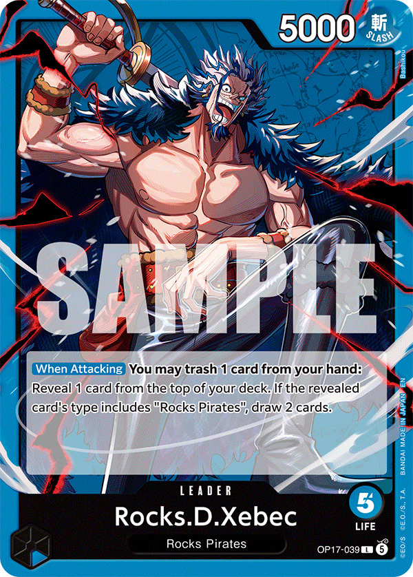
vs Rocks (Xebec)- Deck relies on board and we have Decken: clear Kyo before turn 10, Shanks + Decken the Xebec.
- Don't expose all searchers to Wang Zhi at once; Shiki punishes rested pieces (9 on 6, 5 on 3) — stage helps.
- If he controls board well and you lack Shanks + Decken, switch to Luna hunting and go face two turns in a row.
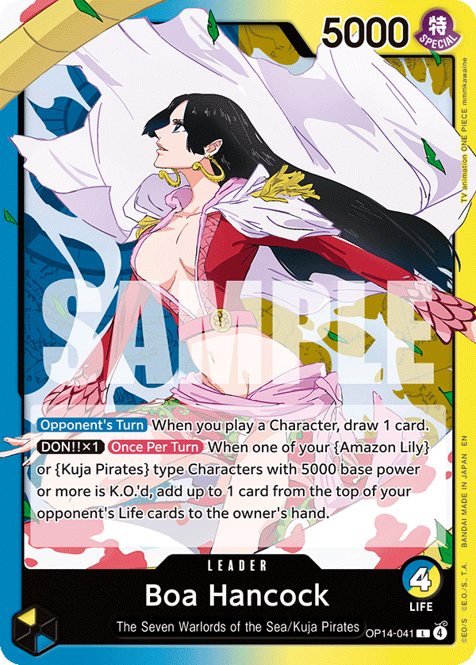
vs Boa Hancock (trigger deck)- Do not starve: attack, take all lives fast, then contest the whole board in one turn (Law, Oden, Perona freeze).
- Yasopp on the Gorgon sister, tap Yasopp, Perona on the other; be happy if he counters.
- Lethal line 7-7-9 (see math section).
vs Ace (Marco / Whitebeard)
- Full starvepoke 8s into Marco, Oden on top, connect as many attacks as possible before he revives.
- Keep counters for after Shanks stabilizes; take the 6 that gives one body.
- First Shanks established = everything he plays is nuked; block the 10, counter the 7.
vs Sabo RB
- Perona is the huge card of the matchup; Otama → Samurai → Law, Oden; small-small attacks to bait counters, then two big ones.
- Decken first, then kill the Luffy (they need it for the 12-cost).
vs Nami / East Blue trigger deck
- Keep the cards that dig for Luna; it is a race, Oden is strong, Yasopp useless.
Leaks → Improvements
| What you did | What to do instead |
|---|---|
| Mirror opponent with an Oden-heavy aggro hand tried to play a value war and traded board instead of going face. | "He should have just went full face like a maniac": each piece he cleared could have been a face swing; instead he gave Roberto two extra turns for double Shanks. |
| Roberto attacked into a Rocks board without checking for Shanks/Usopp spell in hand and nearly died. | When you know he holds Shanks, Samurai + Perona and chill; attack very big early so he cannot afford to leave DON!! open for the spell. |
| Vs Sabo he went 12 on the 8k instead of on the Luffy (they need Luffy for the 12-cost). | Kill the Luffy first: clears 9k instead of 8k and removes their enabler. |
| Vs Nami he attacked with the leader last and lost the option to use the spell after Perona was traded. | Attack with the leader first to top him, so the spell stays available. |
Q&A Highlights
Quick Reference Card
- Identity: Mihawk is a macro deck. Read your hand and his openers, pick control / value / tempo / aggro, then play that line to the end.
- Cards you see decide it: many Yasopp = control; many Oden = aggro; two Lunas = full face.
- Starve by default (Sabo, Ace, Black Luffy, Rocks); never starve Robin/Boa; never starve in the mirror.
- Behind in the mirror? Dig Odens + Shanks + Lunas, tap Odens, go face, let him waste turns on your board.
- Fixed lethal splits: 7-7-9 vs trigger Blockers, 8-8 pokes then Shanks 14 vs Marco; never start with Shanks when he can block the 12.
- Once one Shanks sticks, the eating phase starts — everything he plays is nuked.
Resources
- Part 2 of the session: https://www.youtube.com/watch?v=YZ4G5Sazwn0
- Roberto's Mihawk guide (free access for the classroom; goes live the day after the session) — Mirror chapter is ~5,000 words, Enel chapter with more videos to come
- Current list: no Bonney, no Perona 5, 2 Luna, 6 counter spells (incl. 3 copies of the new 'trash' event); previous Flame Flame Fruit list ran For Fun